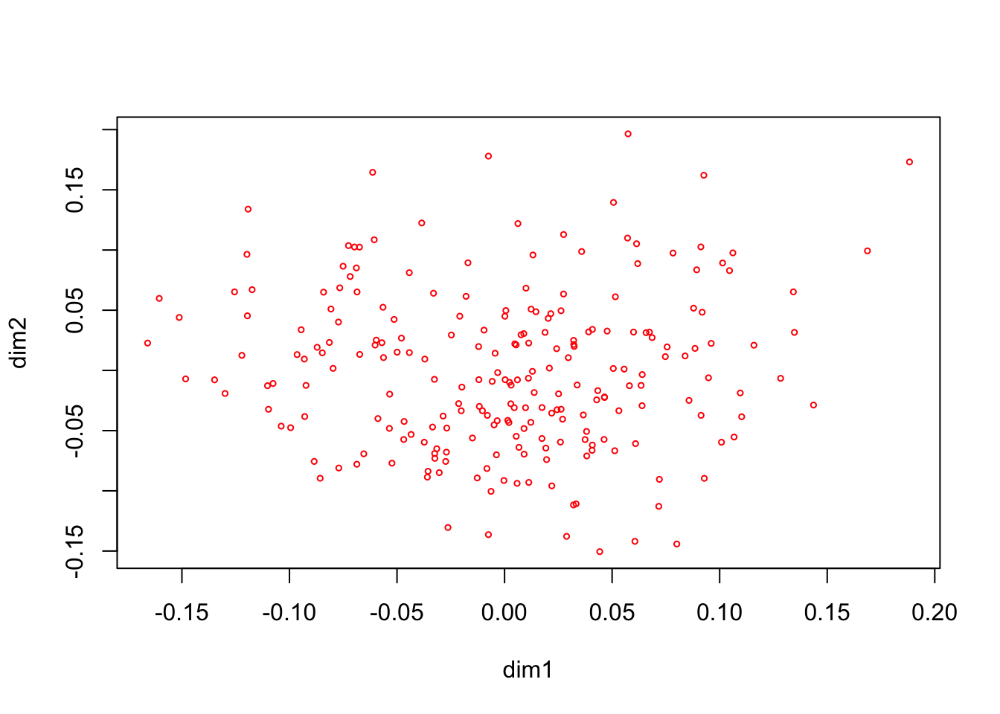
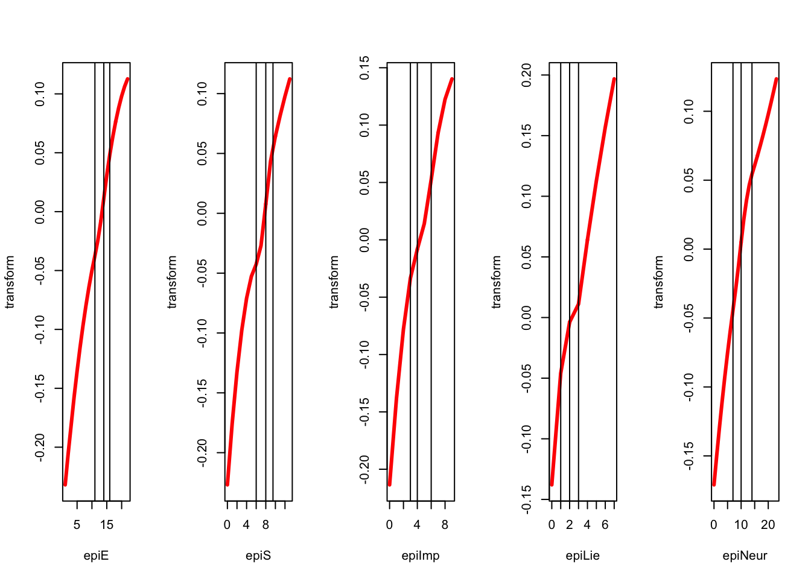
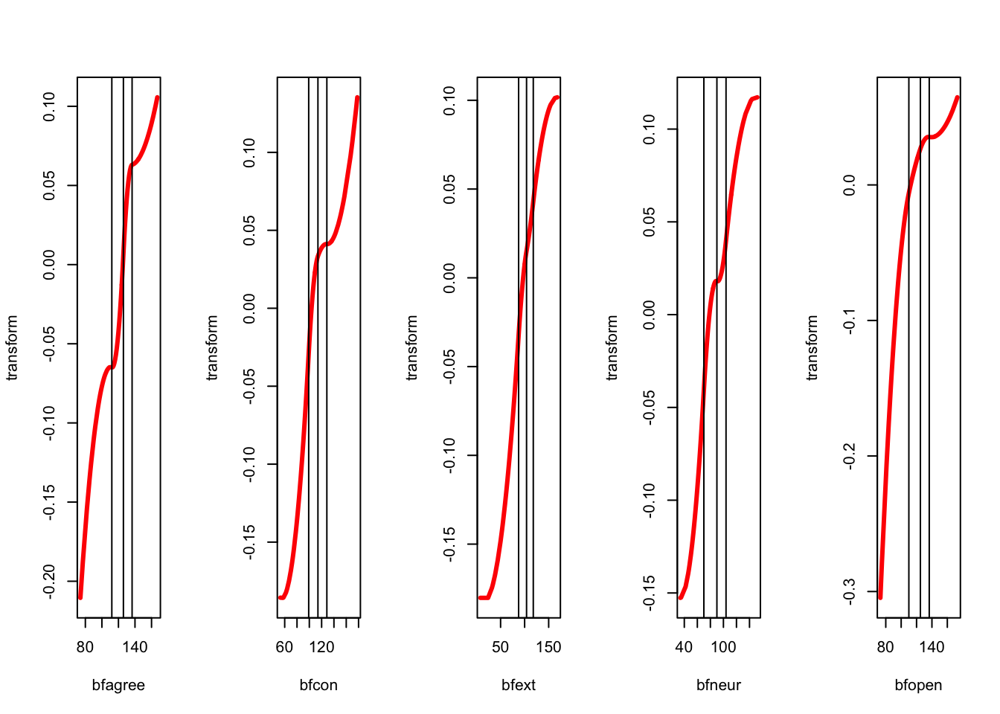
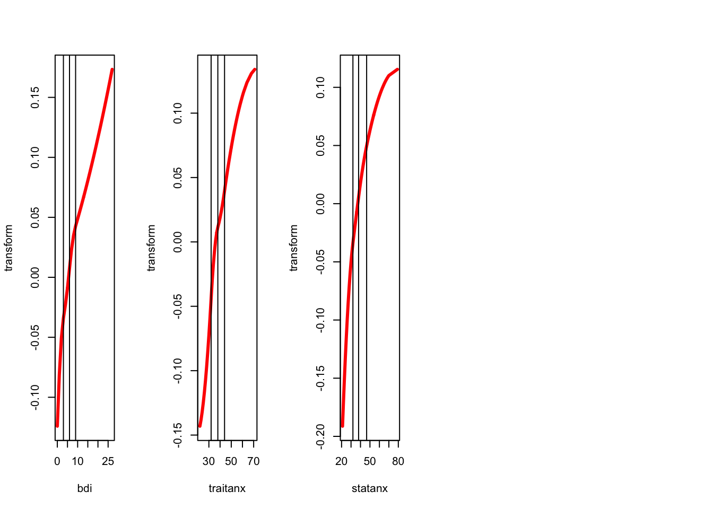
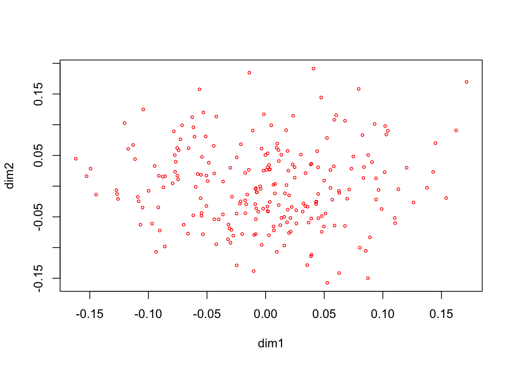
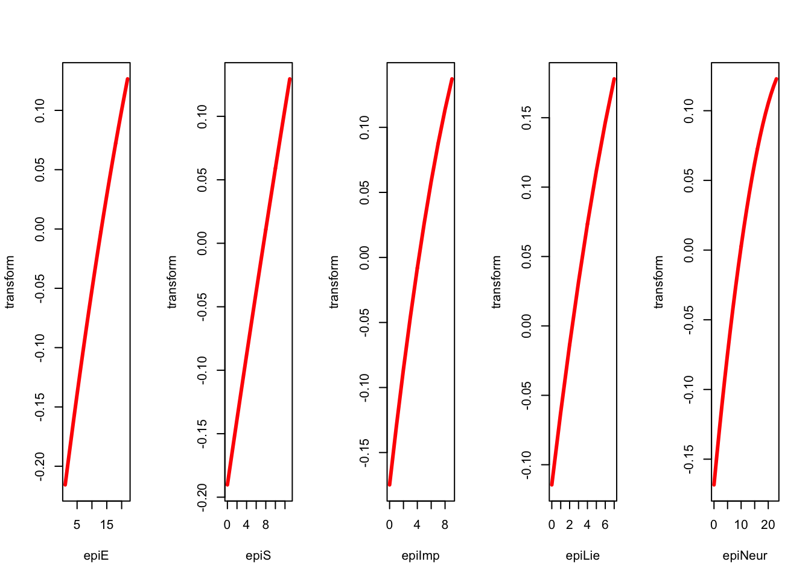
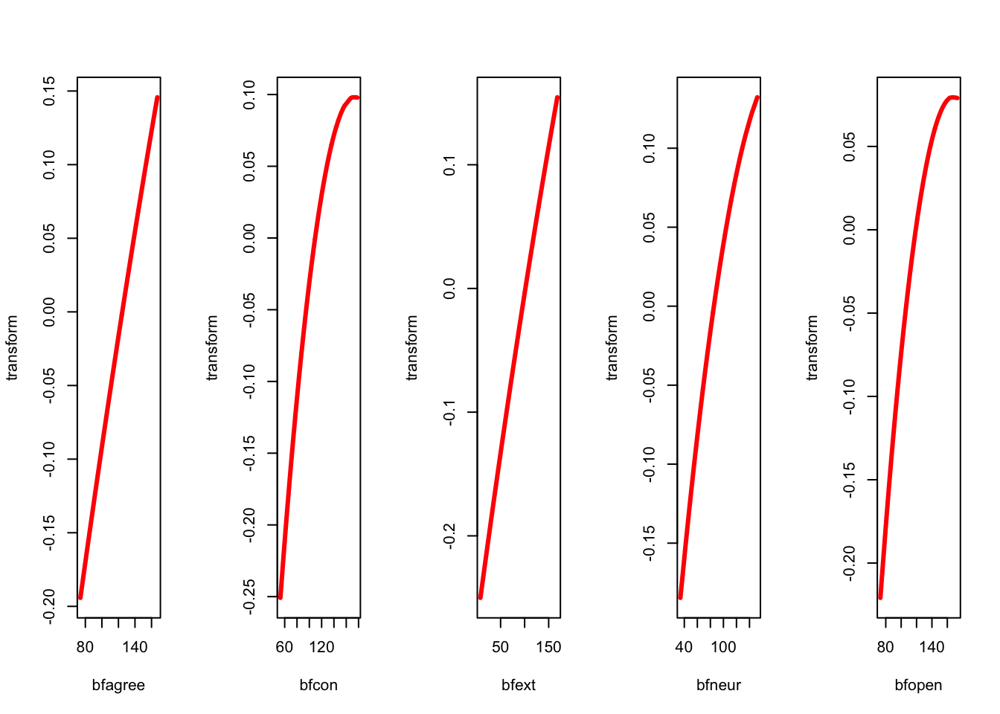
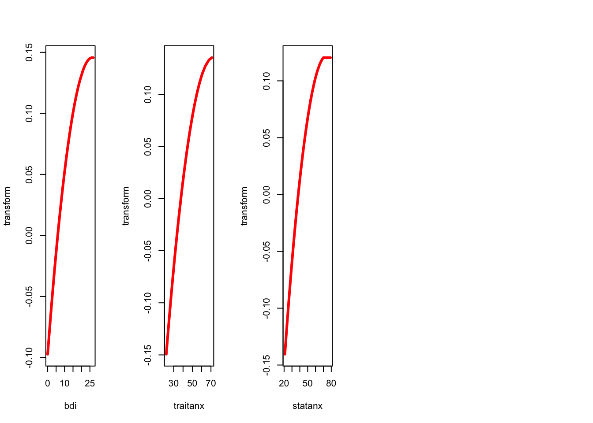

8 Nonlinear Principal Component Analysis and princals()
8.1 Introduction
princals, principals, Shepard-Kruskal, mdrace, history
8.2 Equations
Suppose all \(m\) blocks each contain only a single variable. Then the Burt matrix is the correlation matrix of the \(H_j\), which are all \(n\times 1\) matrices in this case. It follows that MVAOS maximizes the sum of the \(r\) largest eigenvalues of the correlation matrix over transformations, i.e. MVAOS is nonlinear principal component analysis (De Leeuw 2014).
8.3 Examples
8.3.1 Thirteen Personality Scales
We use the same data as before for an NLPCA with all blocks of rank one, all variables ordinal, and splines of degree 2.
epi_copies <- rep (1, 13)
epi_ordinal <- rep (TRUE, 13)
h <- princals(epi, epi_knots, epi_degrees, epi_ordinal, epi_copies)plot(h$objectscores, xlab = "dim1", ylab = "dim2", col = "RED", cex = .5)



We repeat the analysis with ordinal variables of degree two, without interior knots. Thus we the transformation plots will be quadratic polynomials that are monotone over the range of the data.
h <- princals(epi, knotsE(epi), epi_degrees, epi_ordinal)


